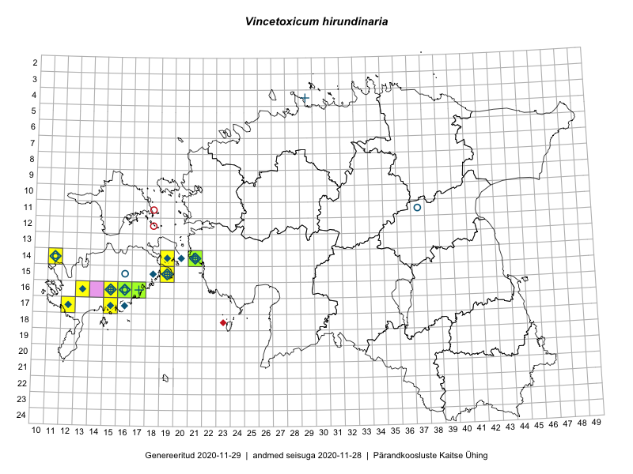

Vincetoxicum hirundinaria — lood-angervars
Kaardile koondatud taksonid: Vincetoxicum hirundinaria Medik. (33)

Kaart põhineb 33 kirjel, neist:
vaatlusi 28
eksemplare 5
Kaasaegsed1 leiukohad asuvad 8 ruudus.
Andmed “Eesti taimede levikuatlasest”,2 sulgudes ruutude arv:3
● 1971–2005 (13)
○ 1921–1970 (4)
△ kuni 1920 (0)
+ hävinud (0)
? kaheldav (0)
Lisaruudud teistest andmebaasidest:4
ELF: 2006– . . . (0)
PKÜ: 2006– . . . (0)
ELF: 1971–2005 (0)
PKÜ: 1997–2005 (1)
| Ruut | Vaatleja(d) | Vaatlusaeg | Kirje PlutoFis |
|---|---|---|---|
| 15-19 | Meeli Mesipuu | 2015-06-21 | ruut/ala: Vincetoxicum hirundinaria Medik. |
| 17-12 | Mari Reitalu | 2015-06-19 | ruut/ala: Vincetoxicum hirundinaria Medik. |
| 14-11 | Mari Reitalu, Oliver Parrest | 2015-07-14 | ruut/ala: Vincetoxicum hirundinaria Medik. |
| 16-16 | Sirje Azarov, Aira Alasi | 2015-07-28 | ruut/ala: Vincetoxicum hirundinaria Medik. |
| 15-19 | Mari Reitalu, Triin Reitalu | 2016-06-30 | ruut/ala: Vincetoxicum hirundinaria Medik. |
| 16-17 | Mari Reitalu | 2008-07-08 | ruut/ala: Vincetoxicum hirundinaria Medik. |
| 14-11 | Mari Reitalu | 2006-09-26 | ruut/ala: Vincetoxicum hirundinaria Medik. |
| 14-21 | Toomas Kukk | 2009-06-29 | ruut/ala: Vincetoxicum hirundinaria Medik. |
| 14-21 | Toomas Kukk | 2008-07-03 | ruut/ala: Vincetoxicum hirundinaria Medik. |
| 14-21 | Toomas Kukk, Ott Luuk | 2009-06-07 | ruut/ala: Vincetoxicum hirundinaria Medik. |
| 15-19 | Meeli Mesipuu | 2015-06-21 | punkt: Vincetoxicum hirundinaria Medik. |
| 17-12 | Mari Reitalu | 2015-06-19 | punkt: Vincetoxicum hirundinaria Medik. |
| 16-16 | Sirje Azarov, Aira Alasi | 2015-07-28 | punkt: Vincetoxicum hirundinaria Medik. |
| 14-11 | Mari Reitalu, Oliver Parrest | 2015-07-14 | punkt: Vincetoxicum hirundinaria Medik. |
| 16-15 | Meeli Mesipuu | 2016-06-28 | ruut/ala: Vincetoxicum hirundinaria Medik. |
| 14-21 | Hannes Pehlak | 2016-06-29 | punkt: Vincetoxicum hirundinaria Medik. |
| 15-19 | Mari Reitalu, Triin Reitalu | 2016-06-30 | punkt: Vincetoxicum hirundinaria Medik. |
| 14-21 | Toomas Kukk | 2013-06-30 | punkt: Vincetoxicum hirundinaria Medik. |
| 16-15 | Meeli Mesipuu, Virve Sõber | 2012-06-08 | punkt: Vincetoxicum hirundinaria Medik. |
| 14-21 | Ott Luuk, Peedu Saar | 2016-06-29 | punkt: Vincetoxicum hirundinaria Medik. |
| 16-17 | Mari Reitalu | 2008-07-09 | punkt: Vincetoxicum hirundinaria Medik. |
| 16-15 | Bert Holm, Annely Esko | 2017-10-09 | punkt: Vincetoxicum hirundinaria Medik. |
| 17-15 | Bert Holm, Annely Esko | 2017-10-09 | punkt: Vincetoxicum hirundinaria Medik. |
| 14-21 | Toomas Kukk | 2008-07-09 | ruut/ala: Vincetoxicum hirundinaria Medik. |
| 14-21 | Toomas Kukk | 2008-07-09 | ruut/ala: Vincetoxicum hirundinaria Medik. |
| 14-21 | Toomas Kukk | 2009-06-06 | ruut/ala: Vincetoxicum hirundinaria Medik. |
| 15-19 | Mari Reitalu, Sirje Azarov, Maris Sepp | 2018-05-23 | ruut/ala: Vincetoxicum hirundinaria Medik. |
| 15-19 | Sirje Azarov, Mari Reitalu, Maris Sepp | 2018-05-23 | punkt: Vincetoxicum hirundinaria Medik. |
| 16-16 | J.-M. Habicht | 2010-07-02 | TAM0021082: Vincetoxicum hirundinaria Medik. |
| 14-21 | Toomas Kukk | 2009-06-27 | TAA0076828: Vincetoxicum hirundinaria Medik. |
| 14-21 | Toomas Kukk | 2009-06-27 | TAA0076829: Vincetoxicum hirundinaria Medik. |
| 16-17 | Peedu Saar | 2015-09-08 | TAA0116461: Vincetoxicum hirundinaria Medik. |
| 14-21 | Ly Vetik | 2014-07-03 | TAM0126885: Vincetoxicum hirundinaria Medik. |
Kaasaegsed leiukohad (tähistatud värvitud ruutudega) põhinevad peamiselt 2014–2019 välitööandmetel. Väiksemal määral on andmebaasi kantud vanemaid leiuandmeid aastatest 2006–2013.↩︎
Kukk, T., Kull, T., Eesti taimede levikuatlas. Eesti Maaülikool, Põllumajandus- ja Keskkonnainstituut, Tartu, 2005.↩︎
NB! 2005. aasta atlase andmestikus katavad uuemad leiud vanemaid. Näiteks kui liik on ruudus registreeritud 1971–2005, siis pole võimalik öelda, kas ta oli sellest ruudust teada ka enne 1970. aastat. Vana atlase andmetel hävinud ja kaheldavaid leiukohti pole hilisemate (taas)leidude põhjal korrigeeritud.↩︎
Eestimaa Looduse Fondi (ELF) ja Pärandkoosluste Kaitse Ühingu (PKÜ) andmebaasid sisaldavad inventeeritud koosluste kirjeldusi ja liigiloendeid. Neist andmekogudest on kaardile lisatud lisatud vaid need ruudud, millest uue atlase andmekogus taksoni kohta kirjeid veel pole. Kõrvale on jäetud teadaolevalt kaheldavad määrangud. Kaartidel katavad uuema perioodi andmed vanemaid, PKÜ omad ELFi omi. Kattumise tõttu võib kaardil näha olla vähem mingi kategooria ruute kui legendis olev arv näitab. ELFi ja PKÜ andmed ei kajastu hetkel vaatluste tabelis ega ruutude liigiloendites.↩︎